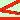

|
Determinare i punti di massimo e minimo per la seguente funzione nell'intervallo a fianco segnato: y = 2senx 0  x Trovo la derivata prima e la pongo uguale a zero y' = 2cos x 2cos x = 0 cos x = 0
Trovo il valore della y corrispondente sostituendo /2 al posto di x nell'equazione di partenza y( Il punto estremante e' A ( Per sapere se e' un massimo od un minimo sostituisco il valore della x nella derivata seconda yII = -2sen x yII( A e' un punto di Massimo Devo ora vedere i valori della funzione negli estremi dell'intervallo
O(0,0) B( sono due punti di minimo |